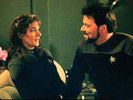
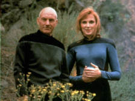
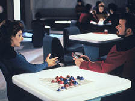
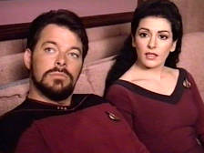
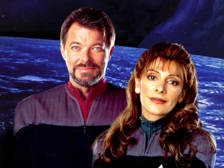

|
Coraes
solitrios do Cosmos
 Recentemente,
em uma conversa com alguns amigos, levantamos algumas questes
sobre o fracasso de Nmesis nas bilheterias mundiais. E
nesta conversa, algum acabou comentando o fato de que o
casamento entre Riker e Troi teria funcionado muito melhor se
ocorresse ao final do filme, e no em sua abertura. Afinal, o
romance dos dois nunca foi plenamente desenvolvido, com exceo
do excelente livro Imzadi, de Peter David que no
considerado parte cannica da cronologia. Recentemente,
em uma conversa com alguns amigos, levantamos algumas questes
sobre o fracasso de Nmesis nas bilheterias mundiais. E
nesta conversa, algum acabou comentando o fato de que o
casamento entre Riker e Troi teria funcionado muito melhor se
ocorresse ao final do filme, e no em sua abertura. Afinal, o
romance dos dois nunca foi plenamente desenvolvido, com exceo
do excelente livro Imzadi, de Peter David que no
considerado parte cannica da cronologia.
 O
fato que, at o surgimento de Deep Space Nine e Voyager,
os produtores nunca haviam se preocupado em desenvolver plenamente
um relacionamento afetivo entre seus personagens. Na dcada de
sessenta, em sintonia com a poca, Kirk nunca chegou a se
envolver seriamente com algum. Seus relacionamentos eram mais
concentrados em conquistas semanais e meramente fsicas. Sua nica
grande paixo ao longo da Srie Clssica com exceo,
claro, da Enterprise foi com Edith Keeler, do episdio The
City on the Edge of Forever. Com o lanamento de A Nova
Gerao, com um capito mais sisudo e em tempos mais
politicamente corretos, essa faceta altamente sexual foi deixada
de lado.
 No
episdio piloto da srie, Encounter
at Farpoint, gene Roddeberry estabeleceu dois
relacionamentos que poderiam render frutos no futuro. O primeiro
era entre Picard e a viva de um velho amigo, Beverly Crusher.
Dizem as ms lnguas que tal relacionamento nunca foi levado s
vias de fato porque Rick Berman no se sentia confortvel
em retratar um romance geritrico. Verdade ou no, o fato
que ao fim de tudo ambos sempre acabaram retratados como dois
grandes amigos.
O segundo relacionamento era, justamente, o de Riker e Troi. No
episdio piloto, ficamos sabendo que no passado do casal havia
uma intensa paixo, deixada de lado pelo desejo de Riker em
priorizar sua carreira. Com os dois servindo na mesma nave, seria
apenas uma questo de tempo para tais sentimentos voltarem a se
manifestar.
 Seria?
A verdade que A Nova Gerao nunca priorizou esse tipo
de relacionamento entre seus personagens. Vejo duas razes
principais para isso acontecer. Primeiro, se os roteiristas
criassem um romance entre os personagens, surgiria tambm a
necessidade de existirem conflitos entre eles algo crucial
para dar credibilidade ao romance o que era proibido pelas
regras estipuladas por Roddenberry. Segundo, acredito que Berman
tivesse um certo receio de alienar parte do pblico, em sua maior
parte jovens do sexo masculino, entre 18 e 30 anos de idade, mais
ansiosos por grandes cenas de batalha.
O que restou aos roteiristas, ento,
foram as paixes fulminantes de um episdio s. incrvel
como os membros da Frota Estelar tem uma tendncia a forte paixes
de primeira vista! Todos os personagens acabaram tendo algum tipo
de episdio com este foco. Quem no se lembra de Picard e Vash (Captains
Holiday, Qpid),
Data e Tasha (The Naked
Now), Data e Jenna D'Sora (In
Theory), Riker e Soren (The
Outcast), Tri e Devinoni Ral (The Price)...
e isso apenas para citar alguns casos. A exceo aqui e LaForge,
que acabou sendo conhecido como o eterno rejeitado da equipe.
 Claro
que, como seres humanos, normal os personagens apaixonarem-se
por algum motivo. Porm, mais normal ainda seria o surgimento de
relacionamentos em um ambiente confinado e com um relacionamento
profissional to prximo. Essa talvez seja uma das grandes
oportunidades perdidas de A Nova Gerao, algo que foi
corrigido em Voyager (Paris e BElanna) e Deep Space
Nine (Kira & Odo, Worf & Jadzia, Ezri & Bashir,
Sisko & Kassidy, entre outros). Isso faz com que A Nova
Gerao seja a srie menos romntica de Jornada. O
curioso que mesmo assim o pblico acabou encontrando meios de
desenvolver teorias a respeito de possveis relacionamentos entre
os personagens impressionante o nmero de fan-fictions
dedicadas a consumao do romance entre Picard e Crusher e entre
Riker e Troi.
Decises da produo parte, o
fato que o formato adotado pela srie, focado em episdios
fechados e nenhuma inteno em se criar arcos de histrias,
impedia que um romance entre os personagens fosse desenvolvido.
curioso notar que a srie mais assistida no momento nos Estados
Unidos, C.S.I., esteja criando o mesmo movimento entre seus fs.
Tal como A Nova Gerao, esta srie focada em episdios
fechados e nenhuma inteno em se criar arcos de histrias, e
do mesmo modo os fs ficam buscando pequenas pistas de que um
relacionamento pode surgir entre os membros da equipe.
 Romance
uma parte importante do ser humano. Quem nunca teve um corao
partido? Com a falta de relacionamentos srios para os
personagens, A Nova Gerao acabou estigmatizada para
alguns como uma srie muito fria, com personagens pouco
humanos. Isso, claro, no exatamente verdade. Os
personagens tiveram oportunidades de demonstrar esta faceta. Porm,
um certo descaso dos roteiristas com fatores determinados no episdio
piloto (o relacionamento de Riker e Troi) acabou por comprometer o
que poderia ser um evento importante no ltimo filme de A Nova
Gerao. Da forma como foi executado, a unio do casal
pareceu jogada, presente apenas para agradar aos fs. Nada ao
longo da srie televisiva justifica uma deciso to sbita. Nmesis
poderia ter sido um filme melhor se a cena do casamento estivesse
em seu final, e a deciso do casal surgisse, por exemplo, de uma
situao de vida-ou-morte envolvendo um deles ou ambos.
De qualquer modo, apesar de todas
as suas qualidades e sucesso a srie, afinal, acabou sendo uma
jornada de coraes solitrios atravs do cosmos. E isto, com
certeza, foi uma oportunidade perdida. Seja enfocando a solido
de sua misso (o que inclusive, justificaria as paixes
fulminantes), seja apostando em um relacionamento para os
personagens, com certeza A Nova Gerao poderia, ao invs
de uma tima srie, ter se tornado uma obra-prima.
Fernando
Rodrigues Co-Editor do Trek Brasilis e
recentemente descobriu que existe amor primeira vista
|